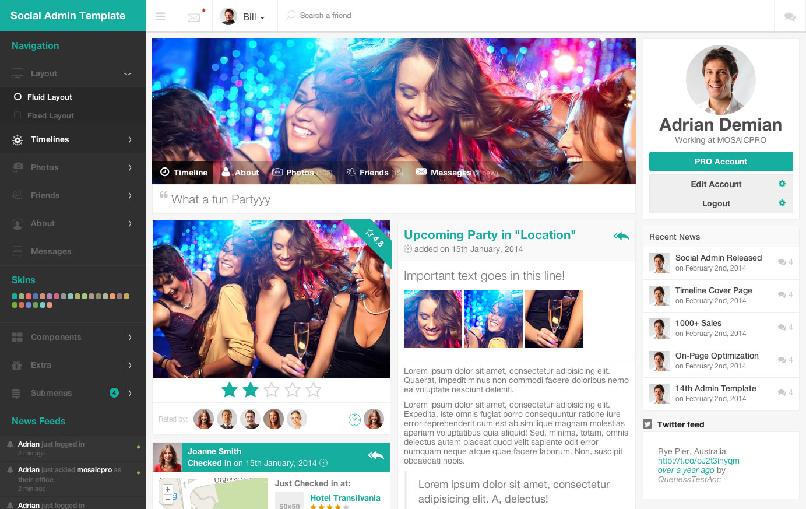

This is an example page that loads strictly the minimal core styles & scripts required by Social Admin Template and the guide.1.getting-started-html.overview component
Social Admin Template is a fully responsive admin dashboard panel and front-end website template that is primarily designed with social networks in mind. Built with love by mosaicpro, the Social Admin Template contains a HUGE collection of ready to go pages with hundreds of HTML elements. Social Admin Template works on any modern browser, any device, any screen size and it includes over 1600 high resolution retina ready font icons, including the popular Font Awesome and Glyphicons PRO.
